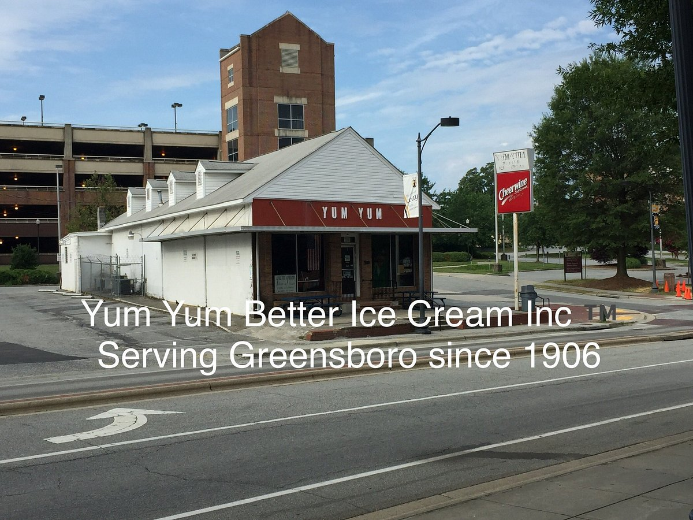
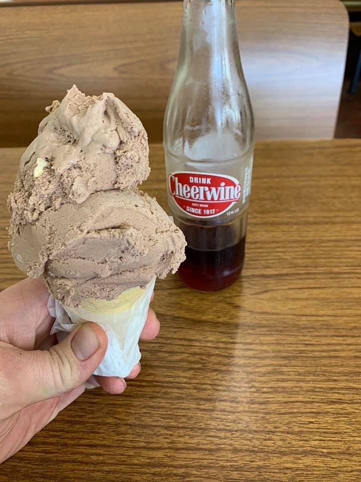
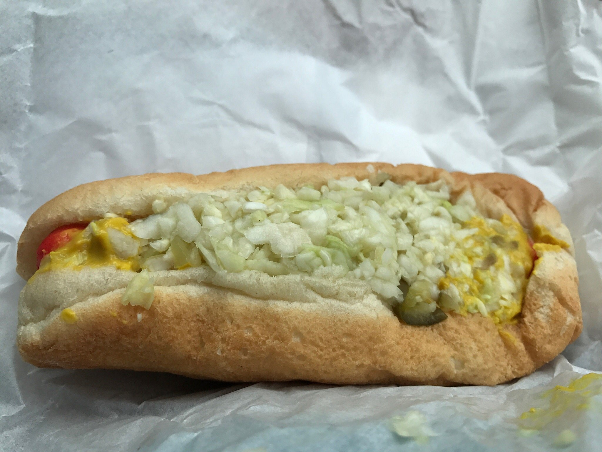
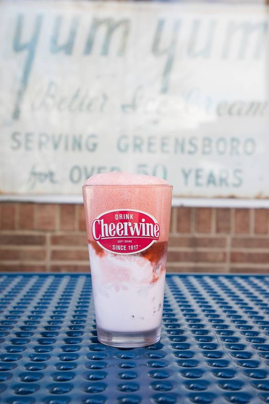
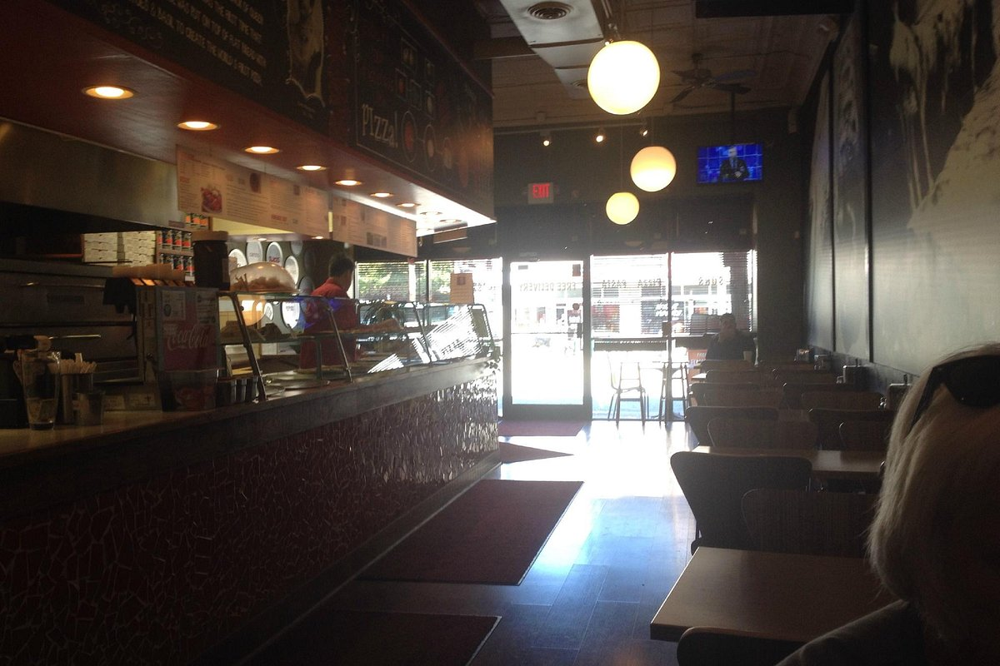
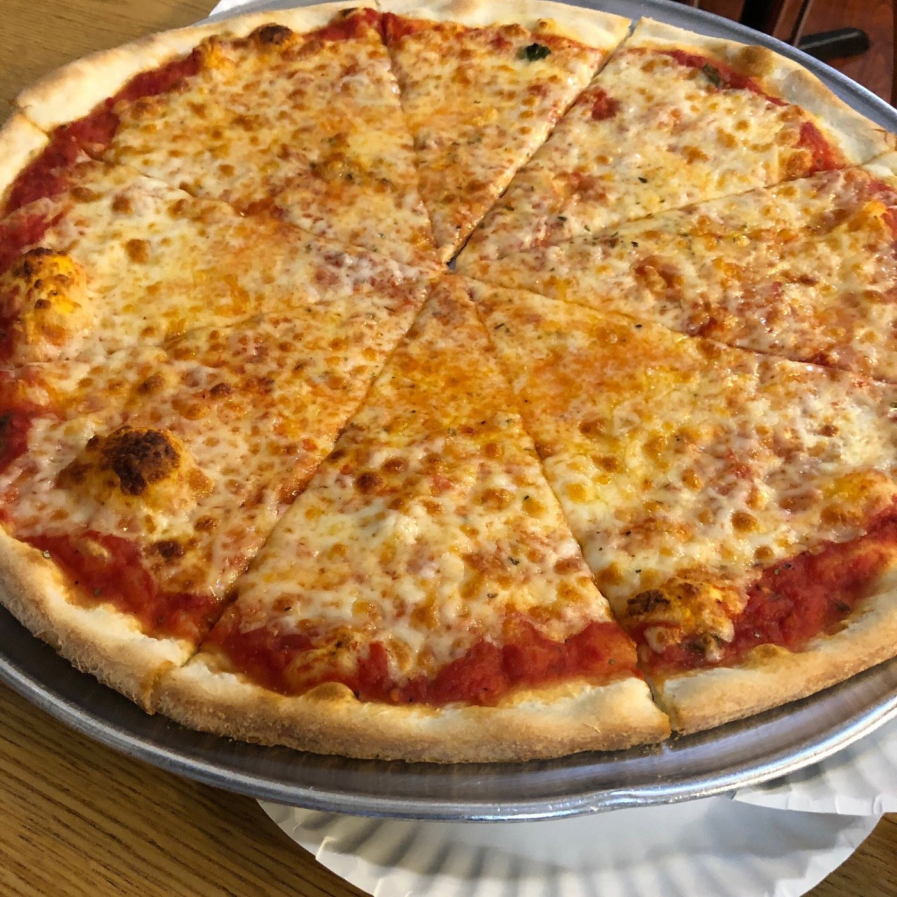
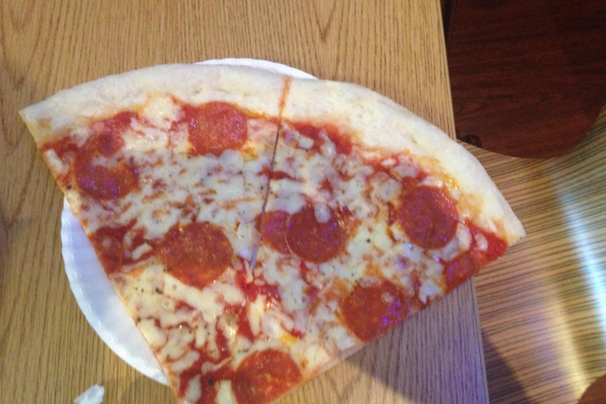
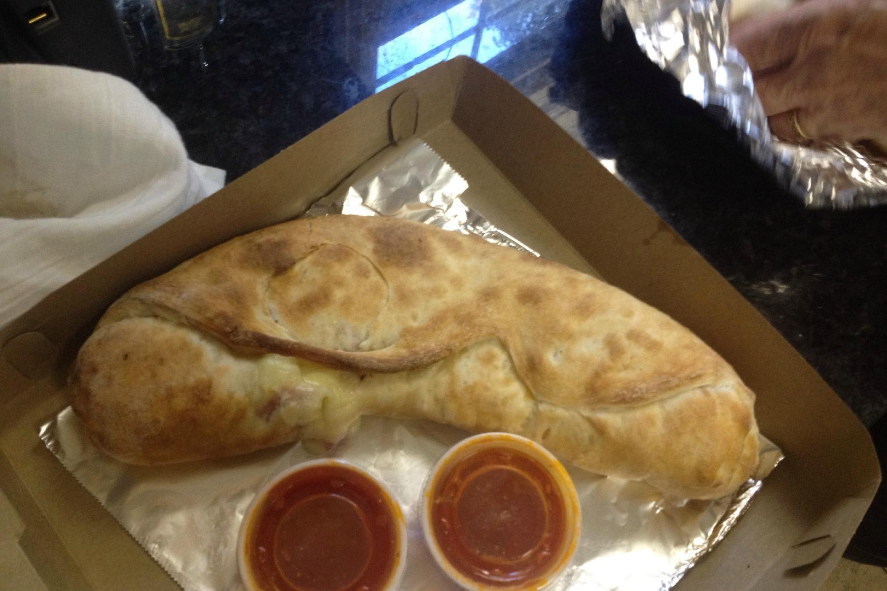
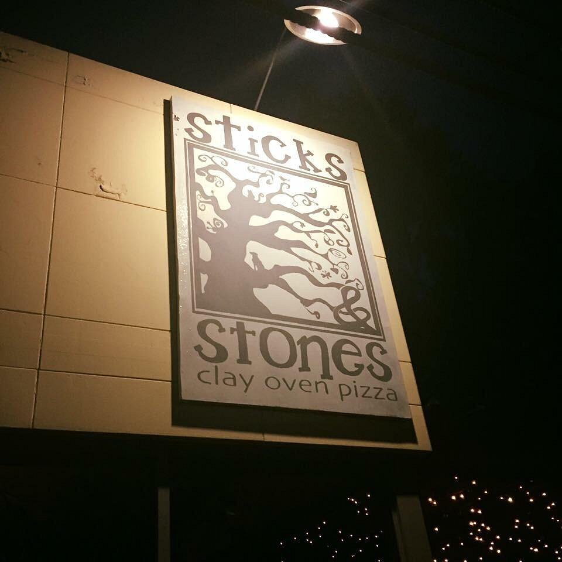
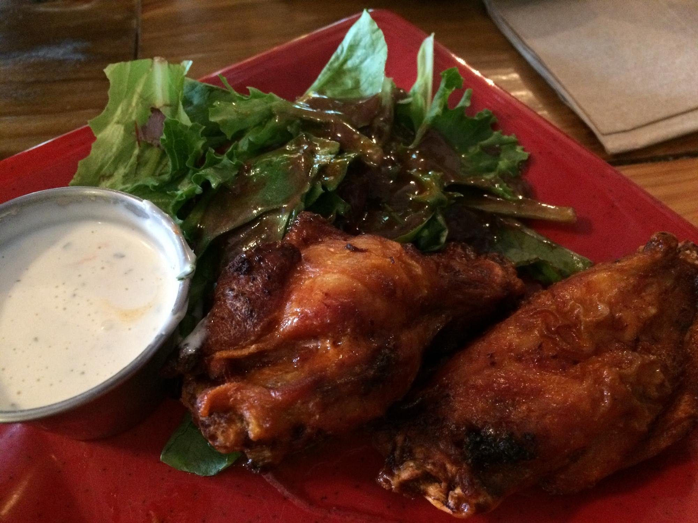

Yum Yum Better Ice Cream
Since 1906, Yum Yum has been serving delicious homemade ice cream and hot dogs. Owned and operated by the Aydelette family, this local favorite is known for its nostalgic atmosphere and classic comfort food, making it a must-visit for anyone on or near the UNC-Greensboro campus.

Location: 1219 Spring Garden St, Greensboro, NC 27403
Specialties: Ice Cream, Hot Dogs, Cheerwine
Hours: 10:00 AM - 9:30 PM
Signature Dishes:
-  Chocolate Ice Cream
-  Signature Hot Dog
-  Cheerwine Float
Slices Pizza by Tony
Slices Pizza by Tony is a family-owned, authentic Italian pizza restaurant located near the UNC-Greensboro campus. Known for its fresh ingredients and friendly atmosphere, this restaurant is a great spot for a casual lunch or dinner with friends.

Location: 401 Tate St, Greensboro, NC 27403
Specialties: Pizza, Vegetarian-friendly
Hours: 10:30 AM - 10:30 PM
Signature Dishes:
-  Cheese Pizza
-  Pepperoni Slice
-  Stromboli
Sticks and Stones
Located on Walker Ave, Sticks and Stones is famous for its artisanal, wood-fired pizzas made with organic, locally-sourced ingredients. They offer a range of vegetarian, vegan, and gluten-free options, making it a great choice for health-conscious diners.

Location: 2200 Walker Ave, Greensboro, NC 27403
Specialties: Pizza, Organic Ingredients, Vegetarian & Vegan Options
Hours: 11:00 AM - 11:00 PM
Signature Dishes:
 Carolina pizza
Carolina pizza Manhattan sandwich
Manhattan sandwich-  Wings